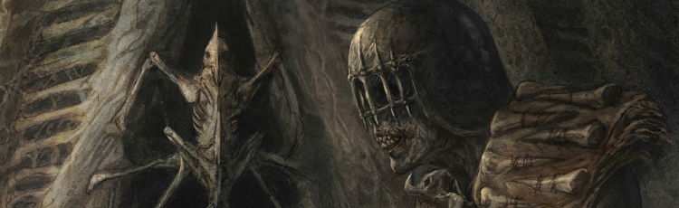

Presented as four separate tales (one for each of the four Dark Judges: Fire, Mortis, Fear and Death), this dared to reimagine some of the most iconic characters in the history of the Dreddverse. Set on Deadworld, before the time when Death first visited Mega-City One, this gently retcons Young Death by sidelining the Sisters of Death and introducing a much wider cast of dark judges. What this short series does is succeed in making the dark judges truly disturbing: shifting a clean gothic horror feel to a more organic hellscape.
Art by Dave Kendall
| Story Title | Parts | Pages | w indicates a wraparound coverCovers | Year(s) | Issues | Writer | Artist | Colourist | Letterer |
|---|---|---|---|---|---|---|---|---|---|
Linked to [Deadworld]Fire | 1 | 6 | 1946: Dave Kendall 1 | 2015 | 1946 | Kek-W | Dave Kendall | <-- | Ellie de Ville |
Linked to [Deadworld]Mortis | 1 | 6 | 0 | 2015 | 1947 | Kek-W | Dave Kendall | <-- | Ellie de Ville |
Linked to [Deadworld]Fear | 1 | 6 | 0 | 2015 | Reprints: SFS251948 | Kek-W | Dave Kendall | <-- | Ellie de Ville |
Linked to [Deadworld]Death | 1 | 6 | 1949: Dave Kendall 1 | 2015 | Reprints: FCBD71949 | Kek-W | Dave Kendall | <-- | Ellie de Ville |
| year | episodes | pages |
| 2005 | 0 | 0 |
| 2006 | 0 | 0 |
| 2007 | 0 | 0 |
| 2008 | 0 | 0 |
| 2009 | 0 | 0 |
| 2010 | 0 | 0 |
| 2011 | 0 | 0 |
| 2012 | 0 | 0 |
| 2013 | 0 | 0 |
| 2014 | 0 | 0 |
| 2015 | 4 | 24 |
| 2016 | 0 | 0 |
| 2017 | 0 | 0 |
| 2018 | 0 | 0 |
| 2019 | 0 | 0 |
| 2020 | 0 | 0 |
| 2021 | 0 | 0 |
| 2022 | 0 | 0 |
| 2023 | 0 | 0 |
| 2024 | 0 | 0 |
| 2025 | 0 | 0 |